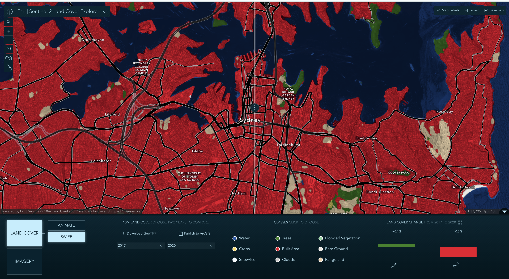
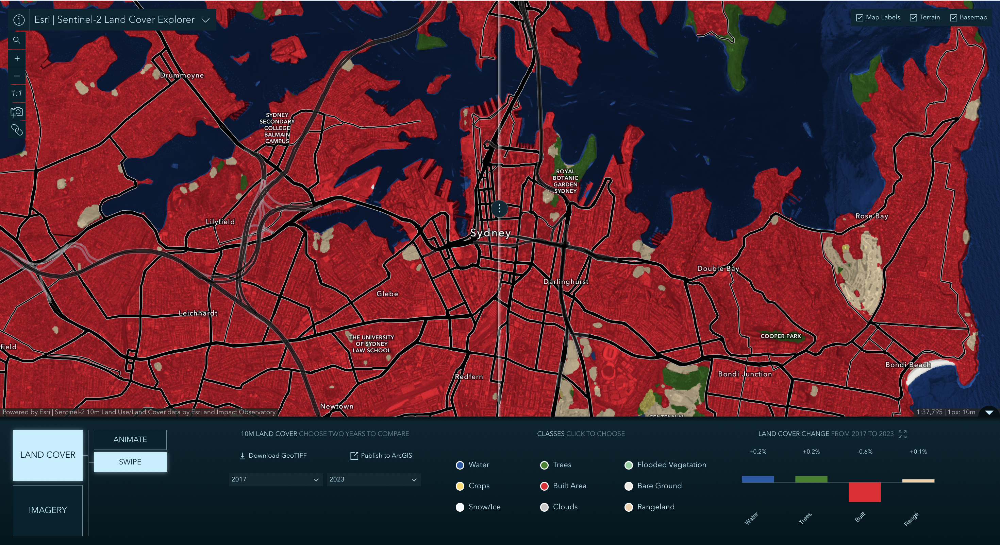

Week 06 · October 2026
Land cover around the Sydney site
The question
How has land cover around the NYU campus in Sydney changed between 2017 and 2023? What changes can the map capture, and what might it miss?
The data
I used the Sentinel-2 10m Land Use/Land Cover Time Series produced by Esri and Impact Observatory, comparing 2017 and 2023. The dataset has a spatial resolution of 10 m and classifies land into nine categories. The map service operates under the Esri Master License Agreement, while the source land-cover data is available under CC BY 4.0.
The method
I used the SWIPE tool in the Land Cover Explorer to compare the two years.
Extent: The same Sydney map extent was used for both sides of the swipe.
Scale: Both maps were displayed at the native resolution of 1 pixel per 10 m.
I also checked 2020 as a third date to see whether the observed changes were consistent.
The evidence


Open the Sydney land cover comparison in ArcGIS Living Atlas
What I found
The map reports that between 2017 and 2023, Water increased by 0.2 percentage points, Trees by 0.2 points, and Rangeland by 0.1 points, while Built Area decreased by 0.6 points. The other categories showed no separately displayed change in the panel. The changes are relatively small and may be within the margin of error for the classification, but they suggest a slight increase in vegetation and a decrease in built surfaces.
The third-date check shows a similar direction: by 2020, Trees had increased by 0.1 points and Built Area had decreased by 0.3 points compared with 2017. This supports the overall classification trend, although it does not prove continuous physical change. One change the map suggests is a small increase in classified vegetation. However, changes in smaller patches of urban greenery may remain invisible.
What this does not show
The classification cannot reliably distinguish a small campus from other forms of urban green space. The published class definitions allow some parks and groves to appear as Built Area, so this is partly a limitation of the category system rather than necessarily an error.
I am using the Trees category to stand for urban vegetation, and it might fail because each 10 m pixel receives only one classification, potentially hiding other types of landscape like Trees mixed with buildings and paths. Therefore, a small increase in Trees does not demonstrate an improvement in biodiversity or ecological quality.
AI use: I used AI to help refine the wording and structure of this journal entry. The map reading, interpretation, and final analysis are my own.